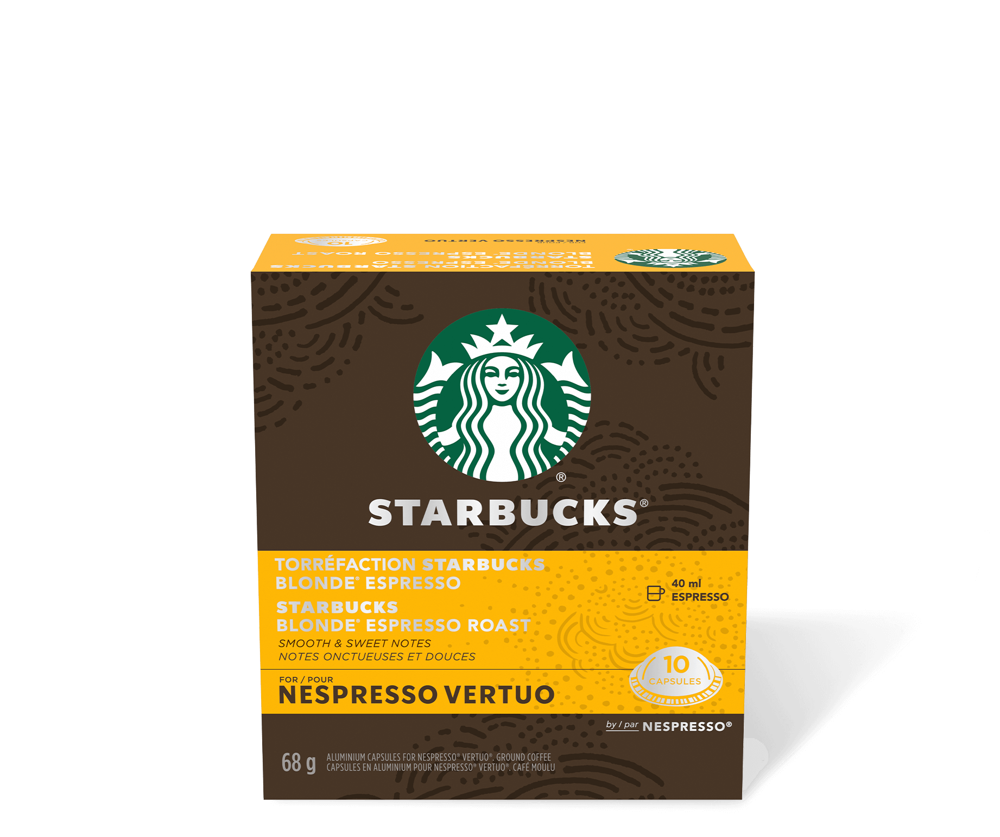
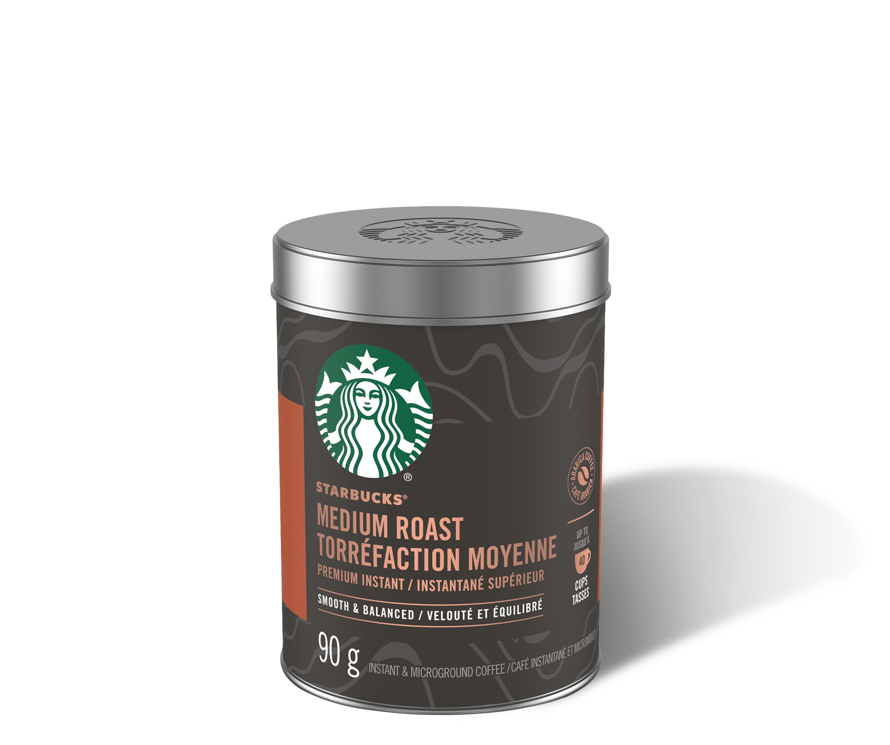
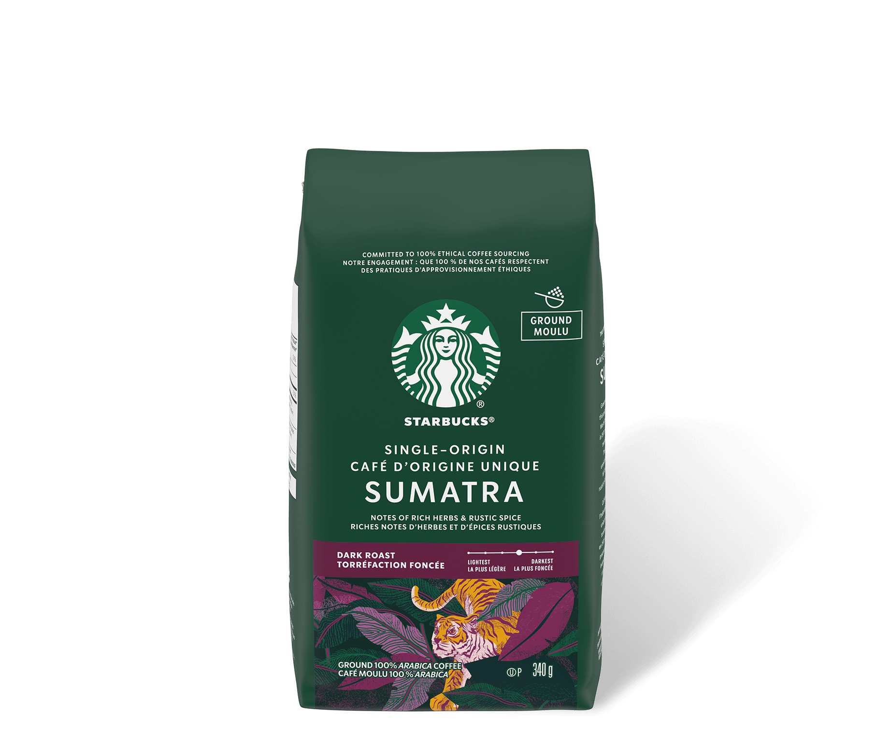

Know where the beans from
The importance of a place for coffee. Its place makes a
difference to its flavour.
It's like wine or tea. A
region's soil, climate and other conditions all have an impact
on how your coffee tastes.
-
pin_drop
Laten America
-
pin_drop
Africa
-
pin_drop
Asian, Pacific
Find your preference of roasts
Many variables affect the flavour of coffee:
where the coffee is grown, what type of coffee is grown, how the
coffee is grown, how the fruit is removed from the bean, how
coffee is blended and roasted, and how coffee is brewed.
-
STARBUCKS® BLONDE ROAST
An easy-drinking cup with mellow and balanced flavours
Starbucks Blonde Espresso Roast
Starbucks True North Blend
-
MEDIUM ROAST
A smooth, balanced cup that brings rich, approachable flavours
Starbucks Pike Place Roast

Starbucks Medium Roast
-
DARK ROAST
A fuller body and a robust, bold taste

Starbucks Espresso Roast

Starbucks Sumatra Single-Origin
Try 4steps for having coffee
When you pay close attention to your coffee’s many characteristics, a sensory world opens up.
-
1
Smell with Inhale deeply
Always smell a coffee before you taste it. Inhale deeply. Your mouth can distinguish five tastes – sweet, salty, bitter, sour, and umami – but your nose can differentiate one trillion aromas!
-
2
Slurp
Take a good, noisy slurp of your coffee. Don’t be shy. This will spray the coffee across your tongue and palate, letting you taste all the subtleties.
-
3
locate
Think about how the coffee feels in your mouth. What is its weight or thickness? Where on your tongue do you experience the flavours?
-
4
Vitally, describe.
What words would you choose to describe your tasting experience? The aroma, the flavours, how the coffee feels in your mouth. Does your tongue detect much acidity in the coffee? What other flavours might you use for comparison?